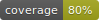
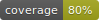
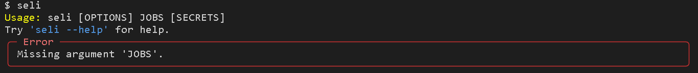
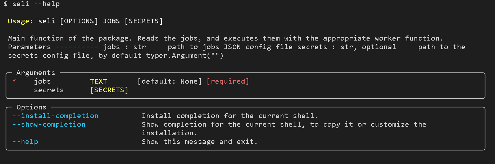
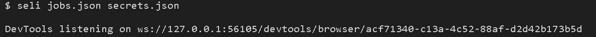

Seli
 

configurable selenium workers
Installation Options
Example using windows. Commands may have to be tweaked for linux or mac systems
git clone https://github.com/yemaney/seli.git
cd seli
poetry install
- download .whl from github repo seli-2.0.0-py3-none-any.whl
python -m venv .venv source .venv/Scripts/activate pip install seli-2.0.0-py3-none-any.whl
Usage



Workflow
flowchart LR
1(jobs.json) --> 3;
2(secrets.json) --> 3;
3(config reader) --> 4;
4(Configs) --> 5;
5(workers) --> 6(do work)- Read configs
- Create Configs objects with the data required to execute a job
- Workers use config input to perform jobs
Secrets
In case you don't want to save sensitive information with the rest of the job configuration seli supports a simple secrets interface.
- Use
secretfield instead oftextin jobs config - Have the
secretfield value be a unique name for the secret - Have a secrets JSON with a
key that matches the secrets name
secrets JSON
{
"password": "123456"
}
// jobs JSON
{
"kind" : "field",
"xpath" : "/html/input",
"secret" : "password"
}
Jobs JSON Schema
{
"jobs": [workers...]
}
workers
Used to search a url using the address bar.
{
"kind": "browser",
"url": "https://www.youtube.com/"
}
Used to click a button.
{
"kind" : "button",
"xpath" : "//*[@id='buttons']/ytd-button-renderer"
}
Used to enter text into an input field.
Normal text.
{
"kind" : "field",
"xpath" : "//*[@id='identifierId']",
"text" : "username"
}
If input text is a secret.
{
"kind" : "field",
"xpath" : "//*[@id='identifierId']",
"secret" : "username"
}
Examples
Both examples showcase a workflow to:
- browse to google.com
- enter "charmerder" into the search bar
- click the Goggle Search button
One example uses just a jobs JSON config file, while the other also uses a secrets JSON config file.
With Normal Text
Jobs JSON file
{
"jobs": [
{
"kind": "browser",
"url": "https://www.google.com/"
},
{
"kind" : "field",
"xpath" : "/html/body/div[1]/div[3]/form/div[1]/div[1]/div[1]/div/div[2]/input",
"text" : "charmander"
},
{
"kind" : "button",
"xpath" : "/html/body/div[1]/div[3]/form/div[1]/div[1]/div[3]/center/input[1]"
}
]
}
Output logs.log File
2022-09-05:12:44:18, 511 INFO [seli.config_readers:69] reading sys.argv
2022-09-05:12:44:18, 512 INFO [seli.config_readers:47] job config found
2022-09-05:12:44:18, 512 INFO [seli.workers:61] browser_worker at https://www.google.com/
2022-09-05:12:44:20, 62 INFO [seli.workers:61] field_worker at /html/body/div[1]/div[3]/form/div[1]/div[1]/div[1]/div/div[2]/input
2022-09-05:12:44:20, 170 INFO [seli.workers:61] button_worker at /html/body/div[1]/div[3]/form/div[1]/div[1]/div[3]/center/input[1]
With Secret Text
Jobs JSON file
{
"jobs": [
{
"kind": "browser",
"url": "https://www.google.com/"
},
{
"kind" : "field",
"xpath" : "/html/body/div[1]/div[3]/form/div[1]/div[1]/div[1]/div/div[2]/input",
"secret" : "pokemon"
},
{
"kind" : "button",
"xpath" : "/html/body/div[1]/div[3]/form/div[1]/div[1]/div[3]/center/input[1]"
}
]
}
Secrets JSON file
{
"pokemon" : "charmander"
}
Output logs.log File
2022-09-05:12:47:01, 294 INFO [seli.config_readers:69] reading sys.argv
2022-09-05:12:47:01, 295 INFO [seli.config_readers:47] job config found
2022-09-05:12:47:01, 296 INFO [seli.config_readers:57] secrets config found
2022-09-05:12:47:01, 297 INFO [seli.workers:61] browser_worker at https://www.google.com/
2022-09-05:12:47:02, 637 INFO [seli.workers:61] field_worker at /html/body/div[1]/div[3]/form/div[1]/div[1]/div[1]/div/div[2]/input
2022-09-05:12:47:02, 741 INFO [seli.workers:61] button_worker at /html/body/div[1]/div[3]/form/div[1]/div[1]/div[3]/center/input[1]